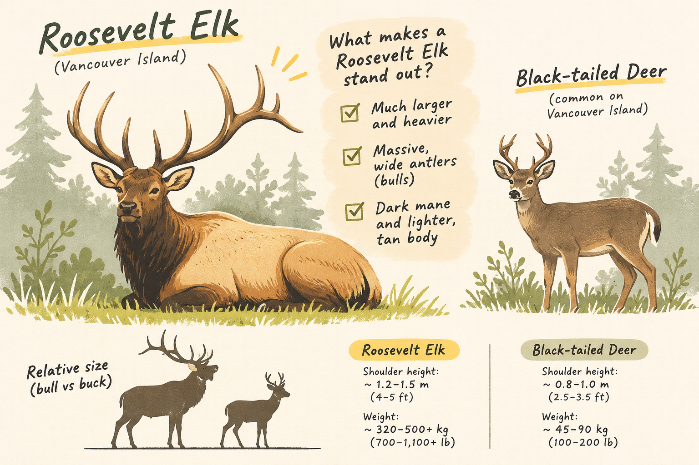

It's a deer.
A very large deer.
Elk, moose, and the small black-tailed deer you see around Vancouver Island all belong to the deer family, Cervidae. Yet we call a male black-tailed deer a buck and a male elk a bull. The dictionary has already gone off the rails.

Cross an ocean.
Change your name.
In North America, “elk” usually means wapiti. In traditional British English, “elk” refers to the animal North Americans call a moose. And yes, British people also say “moose.” Same word, different naming history.
NORTH AMERICAN ENGLISH
ELK
Cervus canadensis
The big antlered neighbour in our story is called an elk—or wapiti.
Switch the place. Watch the label. The animal doesn't change.
Note: UK “elk” commonly denotes moose in traditional usage; “wapiti” specifically names the North American species. Japanese ワピチ names the wapiti, while ヘラジカ names the moose.
Wapiti means…
white rump.
“Wapiti” comes from Shawnee, an Indigenous North American language. It refers to that pale patch around the elk's backside. ワピチ。白いお尻。A glorious name for a glorious animal.
Unfortunately, my elk was lying down. His famous backside was not available for inspection.
Wait. Which
Roosevelt?
Theodore Roosevelt did not have to discover the animal himself. Zoologist C. Hart Merriam described the Olympic Peninsula elk and named it in Roosevelt's honour in 1897—four years before Roosevelt became U.S. president.
A conversation about elk
Merriam and Roosevelt discuss elk at Chicago's World's Columbian Exposition.
An elk gets a presidential-sounding name
Merriam describes the Olympic Peninsula elk as distinct and honours Roosevelt in the name. Roosevelt is not yet president.
Protecting the animal's home
As president, Roosevelt creates Mount Olympus National Monument to protect the elk's habitat; the area later becomes part of Olympic National Park.
Same family.
Different neighbourhood.
The elk you saw in Jasper were most likely Rocky Mountain elk. A bull resting on Vancouver Island is much more likely Roosevelt elk. Roosevelt elk are especially heavy-bodied, adapted to the rainy Pacific coast. Location is a clue; a quick glance at antlers alone isn't a foolproof subspecies test.
Roosevelt elk
Dark coastal forests. Massive body. My very sleepy neighbour.
Rocky Mountain elk
Mountain valleys and meadows. The likely elk of our Jasper memory.
I went outside to look at nature. I came back with a vocabulary problem.
An elk. A wapiti. A Roosevelt. A deer. A bull. A white bum. The animal never once got up.
DERAILED. — One thing led to another.
Start again ↑